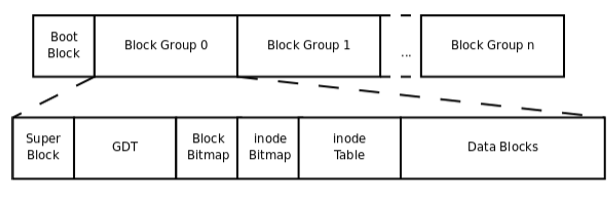

一个磁盘分成多个分区
文件系统中存储的最小单位是块 （启动块Boot Block是1k）
1块 = 8磁盘扇区（也有可能是其他情况）
1磁盘扇区 = 512B
stat 文件 //查看文件所占IO块

每个分区组成：
启动块(Boot Block)：存储磁盘分区信息和启动信息，任何文件系统都不能使用启动块
块组(Block Group)：ext2文件系统将整个分区划成若干个同样大小的块组。
每个块组组成：
超级块：块大小、文件系统版本号、上次mount的时间等等。超级块在每个块组的开头都有一份拷贝。
块组描述符表： 由很多块组描述符组成，整个分区分成多少个块组就对应有多少个块组描述符。
块组描述符表：每个块组描述符（Group Descriptor）存储一个块组的描述信息，例如在这个块组中从哪里开始是inode表，从哪里开始是数 据块，空闲的 inode和数据块还有多少个等等。
块位图：块位图就是用来描述整个块组中哪些块已用哪些块空闲的。用比特位表示
inode位图：和块位图类似，本身占一个块，其中每个bit表示一个 inode是否空闲可用。
inode表：一个块组中的所有inode组成了inode表。
inode(128B)：文件类型，权限，文件大小，创建/修改/访问时间等，也就是ls -l命令看到的那些信息，这些信息存在inode中
数据块：数据、目录等，大小是一个个block
存一个文件：
首先申请一个inode（通过GDT找到一个空闲inode），inode的数据块指针指向存数据的数据块，
同时块位图的相应位置置为1，表示块被占用。如果数据特别大，则最后一个数据块指针，指向的数据块中存放指针（一级间接寻址）。
删一个文件：
先把块位图置为0，再把inode位图中对应的inode置为0
寻址：
目录文件中存放一个个记录项，表示一个个文件

数据块指针有15个，最后三个间接寻址